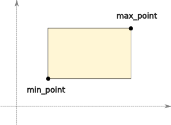

Bounding boxes are axis-aligned rectangles. They are the simplest closed shape type in planar, represented by two points containing the minimum and maximum coordinates for each axis.
Bounding boxes can be useful as standalone shapes, but they are primarily used for approximating more complex shapes to speed operations such as containment checks and intersection. To facilitate this, all finite shapes defined by planar have a bounding_box attribute which returns the smallest BoundingBox object that completely contains the shape. Bounding boxes can also be constructed directly from an arbitrary sequence of points. This creates the smallest BoundingBox object that encloses all of these points:
>>> from planar import BoundingBox
>>> bbox = BoundingBox([(0,0), (1,2), (-5,6), (-3,2), (0.5,-1)])
>>> print(bbox)
BoundingBox([(-5, -1), (1, 6)])
Even bounding box instances have a bounding_box attribute, since they are themselves finite shapes. The bounding box of a bounding box is just itself, which may seem silly, but it lets you include BoundingBox instances in collections of other shapes without special casing them. For example, you can construct a BoundingBox object from a sequence of shapes. The resulting bounding box encloses all of the shapes provided:
>>> from planar import BoundingBox, Polygon
>>> shapes = [
... Polygon([(1,1), (2,3), (3,1), (2, -1)]),
... Polygon.regular(vertex_count=8, radius=2),
... BoundingBox([(5,5), (7,7)]),
... ]
>>> bbox = BoundingBox.from_shapes(shapes)
>>> print(bbox)
BoundingBox([(-2, -2), (7, 7)])
It is also possible to create a BoundingBox from a center point, specifying its width and height explicitly:
>>> from planar import BoundingBox
>>> bbox = BoundingBox.from_center((2,2), width=4, height=9)
>>> print(bbox)
BoundingBox([(0, -2.5), (4, 6.5)])
min_point – The minimum “corner” point of the box. This is the corner with the smallest x and y value.
max_point – The maximum “corner” point of the box. This is the corner with the largest x and y value.
width – The width of the box along the x-axis.
height – The height of the box along the y-axis.
center – The center point of the box.
is_empty – True if the box has zero area.
bounding_box – Is there an echo in here?
All closed shapes, including bounding boxes, have a contains_point() method for testing if a point is inside or outside of the shape. For bounding boxes, this is an extremely simple, and fast test so often a hit test of a complex shape will first do a test against the shape’s bounding box to quickly eliminate points that are not near the shape at all. This is done automatically by built-in planar shapes where appropriate, but you can employ this strategy yourself if you create your own custom shape classes with planar primitives.
contains_point() has special semantics for properly handling shapes that share edges. If you have multiple non-overlapping shapes that share edges, the method will return True for, at most, one shape for any given test point. This means that for any single shape, some edge points are considered “inside” the shape, whereas others are not. If all edge points were considered “inside”, then points along a shared edge would be considered inside both shapes. On the other hand, if all edge points were considered “outside” then there would be a gap along the shared edges. Since neither of these results is satisfactory, planar instead ensures that points along the edge belong only to the shape with the coincident edge to the “left” or “below”.
Because bounding boxes are often derived from other shapes (and also cached), they are themselves immutable. Thus, you cannot directly modify the attributes of a BoundingBox, and operations that would modify the shape will return a new instance.
As with all shapes, transforms can be applied to bounding boxes by multiplying. The type of the resulting shape depends on the transform. Rectilinear transforms that preserve axis-alignment will result in a new BoundingBox instance when transformed. Such transforms include translation, scale, and rotation by multiples of 90 degrees:
>>> from planar import BoundingBox, Affine
>>> bbox1 = BoundingBox([(0,0), (5,2)])
>>> bbox2 = bbox1 * Affine.rotation(90) * Affine.scale(3)
>>> print(bbox2)
BoundingBox([(-6, 0), (0, 15)])
Non-rectilinear transforms can be applied to BoundingBox objects as well, but the result will be a Polygon since the resulting shape will no longer be axis-aligned:
>>> from planar import BoundingBox, Affine
>>> bbox = BoundingBox([(0,0), (5,5)])
>>> poly = bbox * Affine.shear(30)
>>> print(poly)
Polygon([(0, 0), (2.88675, 5), (7.88675, 5), (5, 0)], is_convex=True)
Bounding boxes can also be converted directly to an equivalent 4-sided Polygon. Since polygons are mutable, this is one way to get around the immutability of BoundingBox instances. This can also be useful to easily convert a bounding box into a sequence of 4 points, which may be more convenient to draw:
>>> from planar import BoundingBox, Affine
>>> bbox = BoundingBox([(-1,-2), (3,4)])
>>> poly = bbox.to_polygon()
>>> print(poly)
Polygon([(-1, -2), (-1, 4), (3, 4), (3, -2)], is_convex=True)
Since bounding boxes are often used to “frame” other shapes, there are a couple of methods that are useful for manipulating shapes within a frame.
You can shrink and expand a bounding box about its center point by an absolute amount using the inflate() method. This method allows you to derive a new bounding box that is wider or higher than an existing one by fixed values. You can provide a single number to inflate() to change the width and height by the same absolute amount. Positive amounts increase the size while negative amounts decrease it. You can alter the width and height independently by providing a sequence of two numbers, such as a tuple, or Vec2 object:
>>> from planar import BoundingBox
>>> bbox = BoundingBox([(-1,-2), (1,2)])
>>> bbox.inflate(1)
BoundingBox([(-1.5, -2.5), (1.5, 2.5)])
>>> bbox.inflate((1,-2))
BoundingBox([(-1.5, -1), (1.5, 1)])
The second useful “framing” method allows you to derive a shape fitted to a bounding box from an existing arbitrary shape. The BoundingBox fit() method takes an input shape and creates a transformed version that is translated and scaled so that it fits in the bounding box. The input shape is scaled evenly to preserve its aspect ratio.